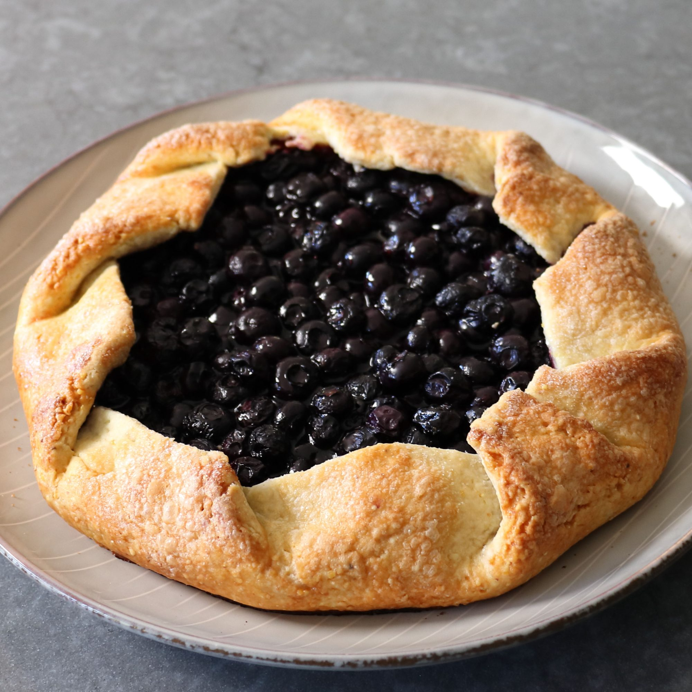

Blueberry Cornmeal Galette

Description
If you're new to baking, you'll be happy to know that this is what we call in the business a "rustic" pastry, which means you don't have to stress about making it look perfect. If you want to do a little fine-tuning, like I did, feel free, but no one is going to have a problem if you don't. Now, running out of ice cream is another story, so make sure you're stocked. Anyway, whether it's nice and neat, or extra rustic, I really do hope you give this a try soon.
Ingredients
- For the Cornmeal Crust:
- 1 ½ cups all-purpose flour
- ½ cup cornmeal
- ½ teaspoon fine salt
- ½ cup cold unsalted butter, cubed
- 6 tablespoons ice water, or as needed
- For the Blueberry Filling:
- 1 pound fresh blueberries, rinsed and dried
- ½ cup white sugar
- 1 tablespoon lemon juice
- 2 teaspoons lemon zest
- 1 ½ teaspoons cornstarch
- for the Egg and Sugar Glaze:
- 1 large egg, beaten
- 1 teaspoon water
- 1 tablespoon demerara sugar
Steps
- Combine flour, cornmeal, and salt in a bowl with a pastry blender. Add cold butter and combine with the pastry blender until coarse crumbs form. Drizzle in cold water, a little at a time, stirring to combine with a fork, until dough comes together.
- Turn dough onto a work surface and bring together with your hands; press into a disk of dough.
- Wrap dough in plastic wrap and chill in the refrigerator for about 30 minutes.
- Preheat the oven to 400 degrees F (200 degrees C). Line a baking sheet with parchment paper or a Silpat® baking mat.
- Combine blueberries, sugar, lemon juice, lemon zest, and cornstarch in a bowl.
- Remove dough from the refrigerator and roll on a lightly floured work surface into a 15-inch circle, about 1/8 inch thick.
- Place blueberry filling into the center of the dough, leaving 3 to 4 inches of space around the border of dough. Fold dough up and around the berries, rotating a few inches and make another fold, overlapping the first; repeat around the dough until pleats are formed.
- Combine beaten egg and water in a small bowl and brush on the dough. Sprinkle on demerara sugar.
- Bake in the center of the preheated oven until golden, about 45 minutes.
Odin Recipes